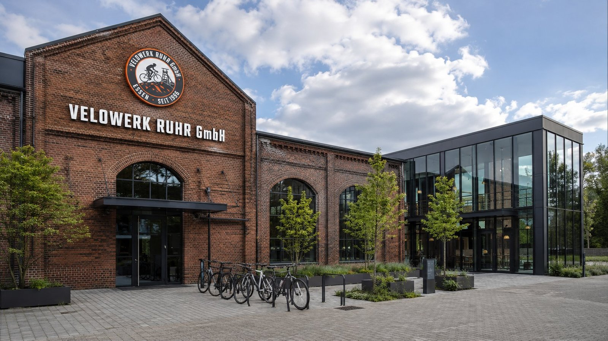

Unternehmensporträt
Die Maschinenbauingenieurin und ehemalige Amateur-Radrennfahrerin Katharina Brandt gründete die Velowerk Ruhr GmbH im Jahr 1996 in einer leerstehenden Maschinenhalle der ehemaligen Zeche Helene in Essen-Altendorf. Ihre Idee: robuste, langlebige Fahrräder für den Alltag im Revier – gebaut von Menschen aus der Region.
2003 trat der Unternehmer Dr. Stefan Roloff als zweiter Gesellschafter in die GmbH ein und brachte das Kapital für die Modernisierung der Fertigung mit. Seit 2015 führt Martin Frank als Geschäftsführer die Geschäfte. Heute beschäftigt das Unternehmen 38 Mitarbeiterinnen und Mitarbeiter, darunter drei Auszubildende.
Hauptziel der Velowerk Ruhr GmbH ist die Produktion und der Absatz hochwertiger, langlebiger Fahrräder mit Gewinn. Die meisten Rahmen und Gabeln fertigt das Unternehmen selbst; Komponenten wie Schaltungen, Antriebe und Sättel werden von spezialisierten Lieferanten aus dem In- und Ausland bezogen.

Das Werksgelände an der Helenenstraße in Essen-Altendorf.
Das macht uns aus
Eigenfertigung im Kern
Rahmen aus Stahl und Aluminium entstehen in Reihenfertigung – vom Zuschnitt über das Schweißen bis zur neuen Lackieranlage. Die Endmontage der Volumenmodelle läuft getaktet am Fließband, Pedelecs entstehen in flexiblen Fertigungsinseln.
Vertrieb über den Fachhandel
Unsere Kunden sind Fahrrad-Fachhändler, Großhändler im In- und Ausland sowie eine Handelskette, die Räder unter eigenem Namen vertreibt (Private Label).
Verantwortung für die Region
Pflichtmitglied der IHK zu Essen, Ausbildungsbetrieb für kaufmännische und technische Berufe, kurze Lieferwege zu Partnern im Ruhrgebiet.
Service rund ums Rad
Neben Fahrrädern vertreiben wir Bekleidung, Zubehör und Anhänger als Handelswaren und vermitteln geführte Radreisen als Dienstleistung.